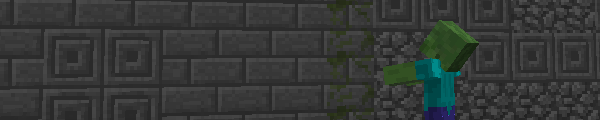
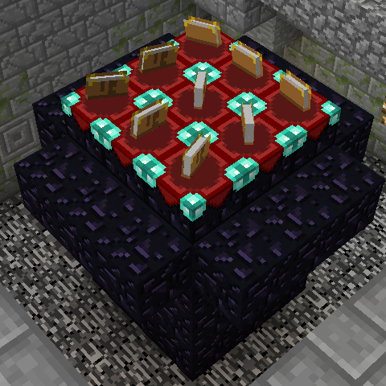

Information
Dwarfs vs. Zombies on Project Enyo (or Enyo DVZ) is an attempt to recreate the old school Dwarfs vs. Zombies from scratch, using the same or similar plugins as the original concept.
We run occasional games, often weekly, that are streamed on Twitch.tv.
Show stream 
To play, you need to join the dvz.projectenyo.eu server when it is online.
The server is running on a modern version of Minecraft and is hosted in Europe , and games are run during EU friendly hours.
Even though the server accepts clients dating back to 1.7, it is recommended to play on a modern version.
| Address | dvz.projectenyo.eu |
| Server Status | - |
| Players online | - |
The Game
Phase 1 — Preparations
Joining the server will spawn you on a platform with other players. When an admin starts the game, everyone will get a magma cream which can be left clicked to get some random discs. Each disc represents a different dwarf class. There is always a chance to get the Builder disc, but you may get other discs as well.
Using a disc will teleport you to the dwarf monument, and you will get a kit of items depending on which class you choose.
It is the common dwarfs general goal to start building walls and aiding the craftsmen so they can gear you up.

This is the Dwarf Monument. Dwarfs worship it. Do not cover it in stone because that is not very dwarf like. Honour and defend it.Dwarfs are of course communists. They work together and share! Your goal as a dwarf is to gear out yourself and as many allies while building defensive structures. Until... SOMEONE DIES!
Phase 2 — Attacks
After a few nights, a dwarf will die. When a dwarf dies, they become a random monster.
There are Common Monsters, Uncommon Monsters, and Rare Monsters.
When you die, you receive a broken disc that when left clicked, will give you some random monster eggs.
Each egg represents a monster class.
Sometimes you get a lot of choices of what to play as, and sometimes you have no other option but have to play as a Zombie.
Selecting a monster class, you will get a kit of items and be teleported to the monster spawn.
Depending on what monster you are, you will have different abilities.
Monsters can break blocks but cannot pick up any items or craft things.
Phase 3 — Progress
When a monster starts to attack, it is a question of time until another dwarf dies. The builder dwarfs must have built a strong base to keep the monsters out. A two block high wall around a dwarf base is a nightmare for even a player Zombie in this game. But unfortunately there are more than just Zombies coming.
Phase 4 — Ending
The game ends when there are no more dwarfs left alive, monsters have broken the Dwarf Monument, or it is time to just start another round.
Games typically last 30 to 120 minutes.
...and sooner or later everyone will become a monster and the game restarts.
Useful Commands
| Useful Commands | |
|---|---|
/tm <message> |
Send message to your own team. |
/msg <player> |
Sends a private message to the specified player. |
/r <message> |
Quickly reply to the last player to message you. |
/ignore <player> |
Ignore other players. |
/helpop <message> |
Message online admins. |
/trash |
Opens a portable disposal menu. |
/mana |
Shows your mana. |
Rules
The rules can be found here.